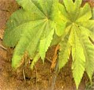
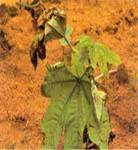
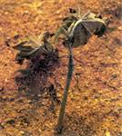

| Home |
| CASTOR |
mAJOR DISEASES |
| 1. Seedling blight |
| 2. Rust |
| 3. Leaf blight |
| 4. Brown leaf spot |
| 5. Powdery mildew |
| 6. Stem rot |
| 7. Bacterial leaf spot |
| 8. Wilt |
| Questions |
| Download Notes |
CASTOR :: MAJOR DISEASE ::SEEDLING BLIGHT
Seedling blight - Phytophthora parasitica
Symptoms
The disease appears circular, dull green patch on both the surface of the cotyledon leaves. It later spreads and causes rotting. The infection moves to stem and causes withering and death of seedling. In mature plants, the infection initially appears on the young leaves and spreads to petiole and stem causing black discoloration and severe defoliation.
|  |  |  |
Dead seedling |
Spot on older leaf | Leaf blight symptom |
Pathogen
The pathogen produces non-septate and hyaline mycelium. Sporangiophores emerge through the stomata on the lower surface singly or in groups. They are unbranched and bear single celled, hyaline, round or oval sporangia at the tip singly. The sporangia germinate to produce abundant zoospores. The fungus also produces oospores and chlamydospores in adverse seasons.
Favourable Conditions
- Continuous rainy weather.
- Low temperature (20-25˚C).
- Low lying and ill drained soils.
Disease cycle
The pathogen remains in the soil as chlamydospores and oospores which act as primary source of infection. The fungus also survives on other hosts like potato, tomato, brinjal, sesamum etc. The secondary spread takes place through wind borne sporangia.
Management
- Remove and destroy infected plant residues.
- Avoid low-lying and ill drained fields for sowing.
- Treat the seeds with thiram or captan at 4g/kg.